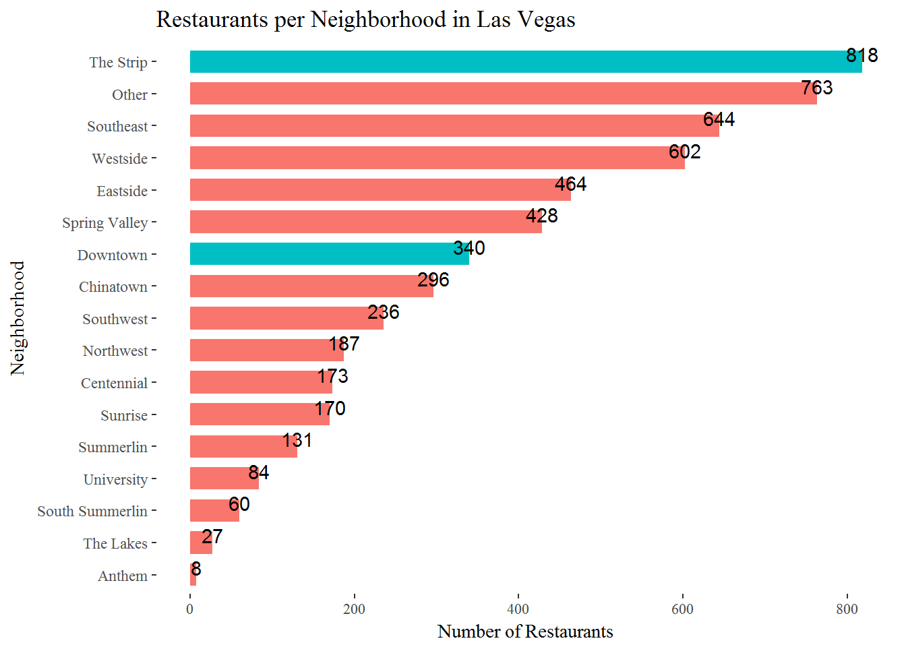

Data Analysis
Restaurants Count in Las Vegas
We draw a plot showing a total count of restaurants by neighborhood level in Las Vegas. As a result, we found the Strip has the most restaurants across all neighborhoods in Las Vegas.
- Downtown: total 340 restaurants
- The Strip: total 818 restaurants

Proportion of Ratings by Neighborhood
We compared the proportion of Restaurants’ star ratings by neighborhood-level in Las Vegas. Star ratings are in scale of 1 to 5 and rated by Yelp Reviewers (i.e., consumers of restaurants).
Restaurant rating proportion is varied by each neighborhood in Las Vegas. However, proportion of restaurant ratings in two selected neighborhoods, The Strip and Downtown are somewhat similar. Downtown has average restaurant rate of 3.65 out of 5.00; The Strip has average restaurant rate of 3.32 out of 5.00. Also, Downtown has a higher proportion for restaurants rated as star 4 or above, comparing to the Strip, which mainly comprises of star 3-rated restaurants.
Review Counts per Neighborhood


Attribute Analysis
I selected alcohol selling option and ambiance as two main attributes to analyze their impacts on Restaurant Proportion/Rating in Old and New Las Vegas.
Impacts of Alcohol Attribute
 "
"
 "
"
- The Strip region’s restaurants are high-rated if they sell alcohol drinks.
- Downtown restaurants slightly follow this trend, too, but boozy option is more popular in the Strip.
Impacts of Ambiance Attribute


- Overall similar trend of ratings per ambiance, but restaurant customers in the Strip prefers “Classy” and “Upscale” restaurants a bit more.
- Also, restaurants in the Strip are categorized with more diversified ambiance attributes.